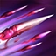
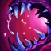

CARNIVORE
Whenever Cho'Gath kills a unit, he recovers Health and Mana.
The values restored increase with Cho'Gath's level.
RUPTURE
Ruptures the ground at target location, popping enemy units into the air, dealing damage and slowing them.
FERAL SCREAM
Cho'Gath unleashes a terrible scream at enemies in a cone, dealing magic damage and Silencing enemies for a few seconds.
VORPAL SPIKES
Cho'Gath's attacks release deadly spikes, dealing damage and slowing all enemy units in front of him.
FEAST
Devours an enemy unit, dealing a high amount of true damage.
If the target is killed, Cho'Gath grows, gaining maximum Health.